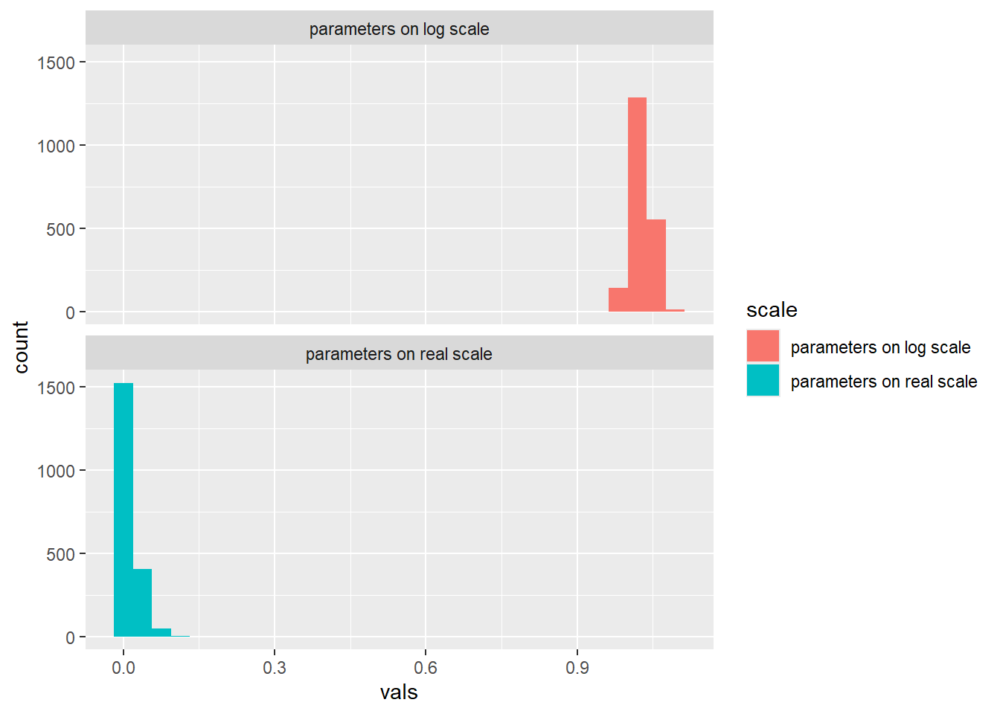
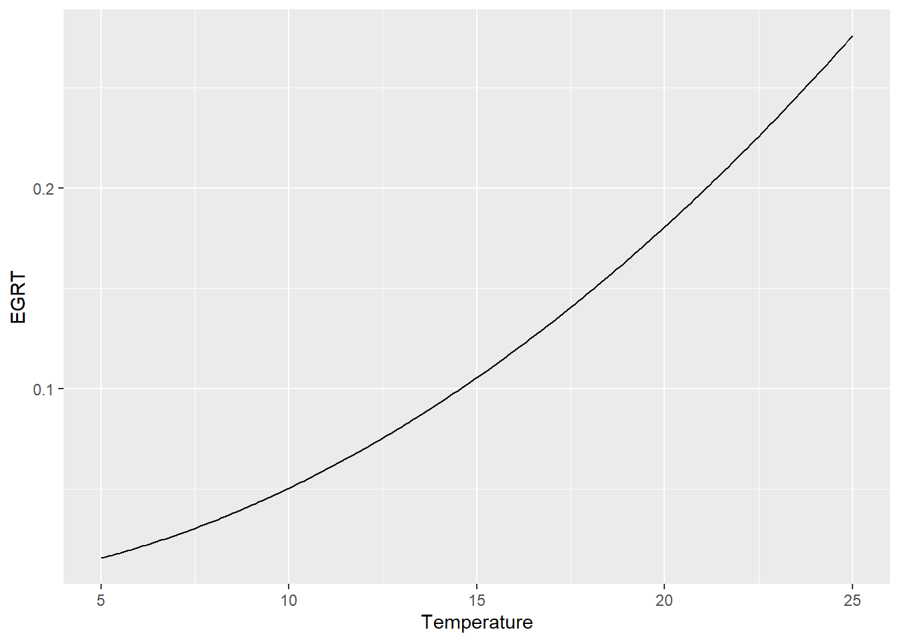
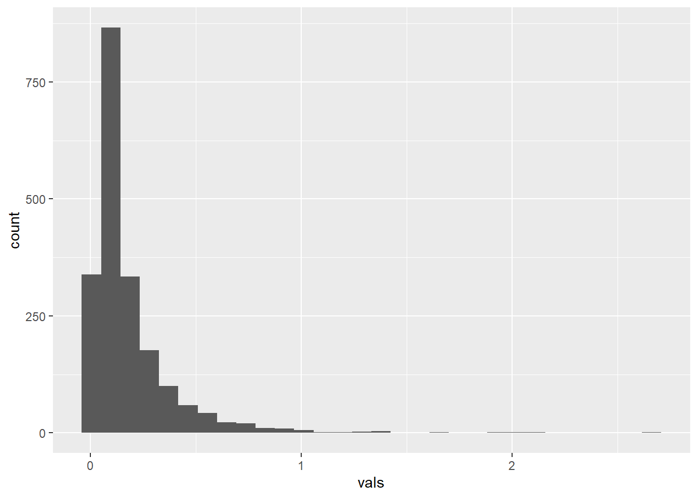
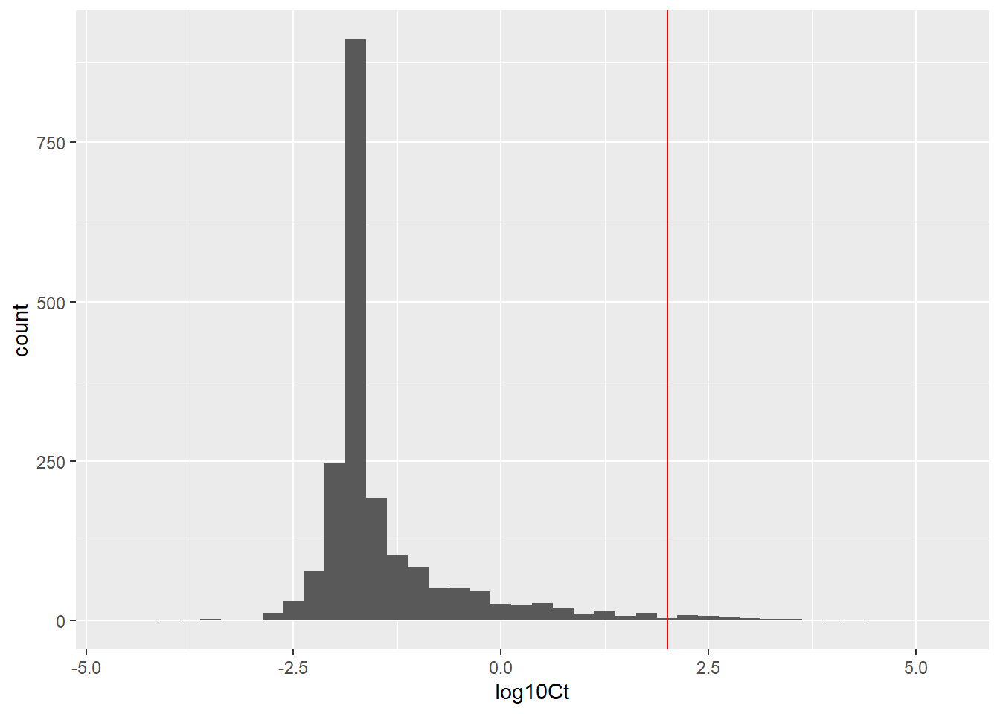
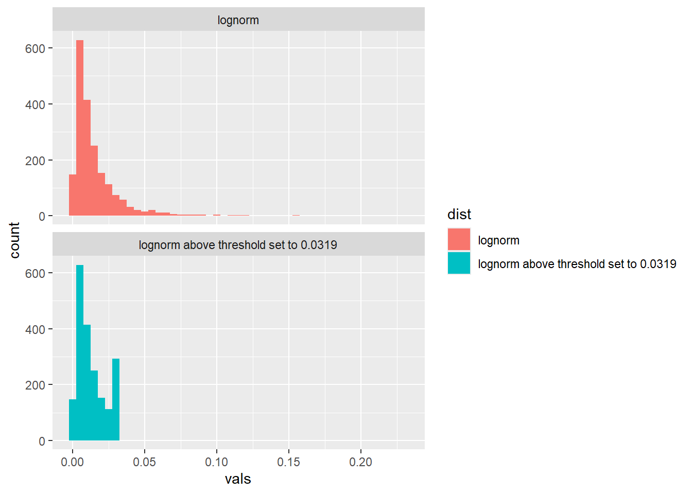
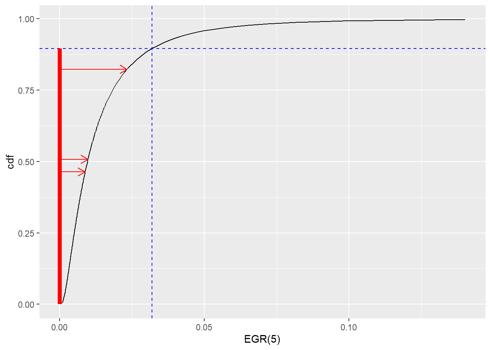
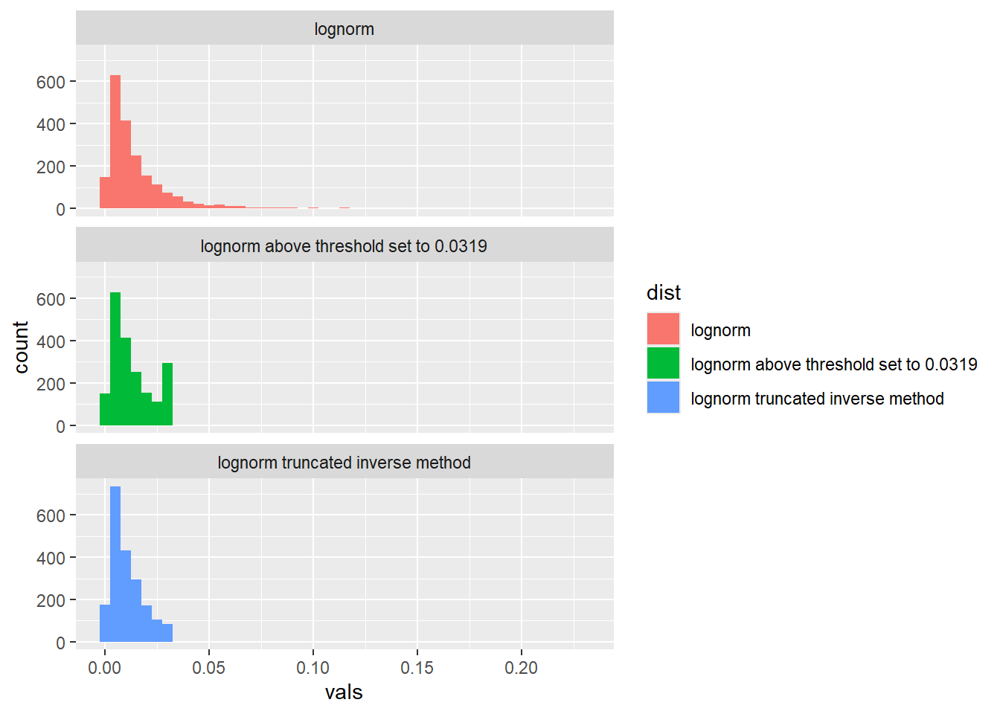
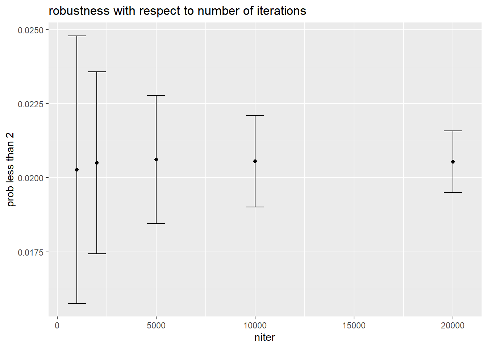
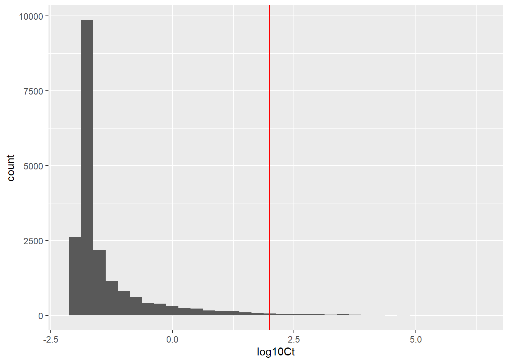

library(ggplot2)Monte Carlo simulation - listeria
A challenge in reproducing an assessment
It turns out that this is a good exercise is the challenges that can come from reproducing the work by someone else. It is also a way to learn the importance of documentation.
As a benchmark, we know that when this Monte Carlo analysis was first performed it generated a log10 C(0) with a mean of -1.19 and standard deviation of 0.968, a EGR(T=20) with a sample mean of 0.137 and a C(2.5) with a mean of 0.09 log cfu/g.
Model
In this case the model equation in the study material has an error: \(EGR(T\cdot t)\) should be \(EGR(T)\cdot t\)
The model consists of two equations:
Equation 1
\[C(t)=\frac{C_{max}}{1+(C_{max}/C(0)-1) \cdot \exp(-EGR(T)\cdot t)}\] Equation 2
\[EGR(T)=EGR(5)\left(\frac{T-T_{min}}{5-T_{min}}\right)^2\] State variables: \(C(t)\)
Parameters: \(EGR(5)\) and \(C(0)\) which are treated as uncertain. \(C_{max}\) and \(T_{min}\) which are set to be fixed.
Other assessment values: \(t = 2.5\)
Set up and run Monte Carlo simulation
niter = 2000
t = 2.5Fixed parameters
\(log10 C_{max} = 7.83\) from table 2 lowest row
log10Cmax = 7.83
Cmax = 10^log10Cmax\(T_{min} = -1.18\) from the text
Tmin = -1.18Uncertainty in initial concentration
Initial concentration on the log10 cpu/g scale is modelled by a generalised beta distribution in the interval with the lower (L) and upper (U) bounds -1.69 to 7. Parameter values for the generalised beta distribution are taken from Table C.4 RTE category Cheese.
\[\frac{C(0)-L}{U-L}= \frac{C(0)-(-1.69)}{7-(-1.69)} \sim beta(0.194,3.177)\]
log10C0 <- rbeta(niter, 0.194, 3.177)*(7--1.69)+-1.69 # log10 cpu/g
C0 = 10^log10C0 #transform to original scale
# check corresondance with first MC-simulation
mean(log10C0)[1] -1.192162sd(log10C0)[1] 0.943017Uncertainty in growth at 5 degrees
The lognormal distribution
To say that \(Y\) is lognormal distributed implies that the log of \(Y\) is normally distributed.
\[log Y \sim N(\mu,\sigma)\]
where \(\mu\) and \(\sigma\) are the expected value and standard deviation on the log scale.
Let us denote the expected value and standard deviation \(Y\) on its original (real scale) by \(m\) and \(s\).
It is common to use the parameters on the log scale to parametrise a lognormal distribution (this is what we do in R). In this case, it is not clear whether the parameters for the lognormal in Table 2 are given on the real and on the log scale. Since they are positive, I suspect they are given on the real scale.
I also know that the biohaz group that worked with this often used the software @risk to perform Monte Carlo simulation. This software one has two ways of parametrising the lognormal distribution, on the real or on the log scale.
To transform from real-space to log-space we can do the following
\[\sigma^2 = \ln (1 + (s/m)^2)\] \[\mu = \ln(m)-\sigma^2/2\]
In case someone wants to do it the other way around: From log-space to real-space:
\[m=e^{\mu+\sigma^2/2}\]
\[s = m \cdot \sqrt{e^{\sigma^2}-1}\]
When we compare the two distributions, we see that treating the numbers in table 2 as mean and standard deviation on the real scale generates a reasonable distribution.
We also have the truncation to a maximum value at 0.0319. This is indeed challenging to work with. Let us first run without the upper truncation.
m = 0.0117 # from table 2
s = 0.00816 # from table 2
sigma2 = log10(1+(s/m)^2)
sigma=sqrt(sigma2)
mu=log10(m)-sigma2/2
# draw sample from EGRT5
EGRT5 <- 10^rnorm(niter,mu,sigma)
EGRT5_logscale <- 10^rnorm(niter,m,s)
# see the difference with real vs log scale
ggplot(data.frame(vals = c(EGRT5,EGRT5_logscale), scale = rep(c("parameters on real scale","parameters on log scale"),each=niter)),
aes(x=vals,fill=scale)) +
geom_histogram() +
facet_wrap(~scale, ncol = 1)
Propagate uncertainty
Transform uncertainty in growth at 5 degrees to growth at 20 using the function in Equation 2.
temperature = seq(5,25,by=0.1)
ggplot(data.frame(Temperature = temperature, EGRT = mean(EGRT5)*((temperature-Tmin)/(5-Tmin))^2),
aes(x=Temperature, y = EGRT)) +
geom_line() 
# transform to EGRT20
EGRT20 = EGRT5*((20-Tmin)/(5-Tmin))^2 # equation 8
ggplot(data.frame(vals = EGRT20),
aes(x=vals)) +
geom_histogram() 
# check correspondence with first MC simulation
mean(EGRT20)[1] 0.1806413# Output
Ct = Cmax/(1+(Cmax/C0)-1)*exp(-EGRT20*t)
log10Ct = log10(Ct)Summarise and visualise uncertainty
hist(Ct) # a bit ugly graphdf_MC <- data.frame(log10Ct = log10Ct)
ggplot(df_MC, aes(x = log10Ct)) +
geom_histogram(binwidth = 0.25) +
geom_vline(xintercept=2,colour = "red")
mean(log10Ct)[1] -1.388291The histogram is a bit edgy. I would go back and increase the number of iterations to make it more smooth. When doing so, we do not go back and change. Instead, we should write up the MC-simulation as a function.
Before doing that, let us dwell on truncation
How to truncate (advanced section)
A simple, but unfortunately not correct way, to truncate is to assign values that are below or above a threshold the value at the threshold.
For the growth this would imply that whenever the sampled value of \(EGR(5) > 0.0319\) it is set to be equal to 0.0319.
m = 0.0117 # from table 2
s = 0.00816 # from table 2
sigma2 = log10(1+(s/m)^2)
sigma=sqrt(sigma2)
mu=log10(m)-sigma2/2
maxval = 0.0319
# draw sample from EGRT5
EGRT5 <- 10^rnorm(niter,mu,sigma)
EGRT5_trunc <- EGRT5
EGRT5_trunc[EGRT5_trunc>maxval] = maxval
# see the difference between original and truncated in the first way
ggplot(data.frame(vals = c(EGRT5,EGRT5_trunc), dist = rep(c("lognorm","lognorm above threshold set to 0.0319"),each=niter)),
aes(x=vals,fill=dist)) +
geom_histogram(binwidth=0.005) +
facet_wrap(~dist, ncol = 1)
The problem with this way to truncate is that it does not acknowledge that truncation shifts the probability distribution for the remaining distribution.
Remember that the area under the probability density function (if continuous) or that the sum the probabilities for all outcomes (if discrete or categorical) must be one. When we truncate, this requirement should apply on the truncated distribution as well.
To truncate in the correct way, we sample using the inverse method where we only sample from the range where the truncated distribution lies.
pmax <- pnorm(log10(maxval),mu,sigma)
pp <- ppoints(200)
prand <- runif(3,0,pmax)
df_arrow <- data.frame(pp=prand,x=10^qnorm(prand,mu,sigma))
ggplot(data.frame(x = 10^qnorm(pp,mu,sigma), cdf = pp),
aes(x=x,y=cdf)) +
geom_line() +
geom_hline(yintercept=pmax, col = "blue", linetype = "dashed") +
geom_vline(xintercept=maxval, col = "blue", linetype = "dashed") +
annotate("segment",x=0,xend=0,y=0,yend=pmax,col="red",linewidth=2) +
annotate("segment",x=0,xend=10^qnorm(prand[1],mu,sigma),y=prand[1],col="red",arrow = arrow(length = unit(0.3, "cm")))+
annotate("segment",x=0,xend=10^qnorm(prand[2],mu,sigma),y=prand[2],col="red",arrow = arrow(length = unit(0.3, "cm")))+
annotate("segment",x=0,xend=10^qnorm(prand[3],mu,sigma),y=prand[3],col="red",arrow = arrow(length = unit(0.3, "cm"))) +
xlab("EGR(5)")
pmax <- pnorm(log10(maxval),mu,sigma)
pp <- runif(niter,min=0,max=pmax)
EGRT5_trunc2 <- 10^qnorm(pp,mu,sigma)# draw sample from EGRT5
df_egrt <- data.frame(vals = c(EGRT5,EGRT5_trunc,EGRT5_trunc2),
dist = rep(c("lognorm","lognorm above threshold set to 0.0319","lognorm truncated inverse method"),each=niter))
# see the differences between original and two ways to truncate where the inverse is correct
ggplot(df_egrt,aes(x=vals,fill=dist)) +
geom_histogram(binwidth=0.005) +
facet_wrap(~dist, ncol = 1)
Truncation matters as it changes the properties of the resulting distribution. For this particular case, truncating the distribution to be below 0.0319, result in a lower median and mean. Using the fix at threshold approach does not change the median, and does give the same mean as the distribution resulting from truncating by the inverse method.
library(dplyr)
df_egrt %>%
group_by(dist) %>%
summarise(
median = median(vals),
mean = mean(vals),
sd = sd(vals)
)# A tibble: 3 × 4
dist median mean sd
<chr> <dbl> <dbl> <dbl>
1 lognorm 0.00995 0.0158 0.0190
2 lognorm above threshold set to 0.0319 0.00995 0.0131 0.00977
3 lognorm truncated inverse method 0.00820 0.0106 0.00755We should then implement the inverse approach when truncating. This is done below.
Tuning the Monte Carlo simulation
Below we specify the Monte Carlo simulation as a function where the number of iterations is our input argument. We are now to select a number of iterations that has good robustness in the derived quantity of interest.
In this case, the quantity of interest is \(P(log10 C(2.5)< 2)\).
run_MC <- function(niter){
# parameter uncertainty
log10C0 <- rbeta(niter, 0.194, 3.177)*(7--1.69)+-1.69 # log10 cpu/g
C0 = 10^log10C0 #transform to original scale
m = 0.0117 # from table 2
s = 0.00816 # from table 2
maxval = 0.0319 #from table 2
sigma2 = log10(1+(s/m)^2)
sigma=sqrt(sigma2)
mu=log10(m)-sigma2/2
# draw sample from EGRT5
pmax <- pnorm(log10(maxval),mu,sigma)
pp <- runif(niter,min=0,max=pmax)
EGRT5 <- 10^qnorm(pp,mu,sigma)
# propagate
EGRT20 = EGRT5*((20-Tmin)/(5-Tmin))^2 # equation 8
Ct = Cmax/(1+(Cmax/C0)-1)*exp(-EGRT20*t)
log10Ct = log10(Ct)
return(data.frame(log10C0=log10C0,EGRT5=EGRT5,EGRT20=EGRT20,log10Ct=log10Ct))
}derive_p2 <- function(niter){
out <- run_MC(niter)
mean(out$log10Ct>2)
}
df_rob <- do.call('rbind',lapply(c(1000,2000,5000,10000,20000), function(j){
p2_reps <- replicate(200,derive_p2(j))
data.frame(p2_mean = mean(p2_reps), p2_sd = sd(p2_reps), niter=j)
}))
df_rob p2_mean p2_sd niter
1 0.0202800 0.004511471 1000
2 0.0205025 0.003068521 2000
3 0.0206150 0.002167363 5000
4 0.0205550 0.001536057 10000
5 0.0205425 0.001040424 20000ggplot(df_rob,aes(x=niter,y=p2_mean)) +
geom_point() +
geom_errorbar(aes(x=niter,ymin=p2_mean-p2_sd,ymax=p2_mean+p2_sd)) +
ylab("prob less than 2") +
labs(title="robustness with respect to number of iterations")
df_MC <- run_MC(2*10^4)
ggplot(df_MC, aes(x = log10Ct)) +
geom_histogram(binwidth = 0.25) +
geom_vline(xintercept=2,colour = "red") #+
#labs(title=paste("P(log10 Ct < 2)=",round(100*mean(df_104$log10C0<2),1),"%")) # a way to add the calculated probability in the graphStandard summary
Mean and 90% probability interval
mean(df_MC$log10Ct) # mean considering uncertainty[1] -1.321535quantile(df_MC$log10Ct,probs=c(0.05,0.95)) # 90% prob int 5% 95%
-1.9668797 0.7967011 Useful summary for decision maker
The summary for the decision maker that is most useful is the quantity of interest.
mean(df_MC$log10Ct<2)[1] 0.97895Answer to the question
I am 97.9% certain that your cheese is safe.